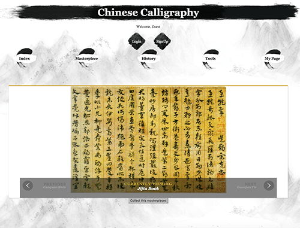

About
About
I'm Ninglu Wang
Just call me Abbey. Born in Mainland China, shaped in Hong Kong, inspired in California, thrive in Michigan!
I am now a first year master student at University of Michigan School of Information, Specialized in Human-Computer Interaction. I am enthusiastic about multiple fields including Graphic Design, User Interface Design, User Experience Design, Web Design and front-end Development.
I am also a basketball player and coffee-holic.
"I design for people and visualize beautiful ideas"
Web Design
Present precise and appealing content.
Web Development
Make it clean, functional and secure.
Graphic Design
It's about both art and science.
UX/UI Design
They become vital parts of products.
User Research
User-centric, listen to users, understand them better.
Projec Management
Make sure great talents work well together with shared value, for the common goals.
University of Michigan School of information -- Ann Arbor, MI
Master of Science in Information (May 2017)
Specialization in Human Computer Interaction
GPA 4.0/4.0
University of California — Berkley Haas Business School -- Berkeley, CA
Exchange Study (January - May 2014)
Completed five courses in accounting, management and data analysis
GPA 3.68/4.0
The Hong Kong Polytechnic University Faculty of Engineering -- Kowloon, HK
Bachelor of Science in Enterprise Engineering with Management (May 2015)
College Entrance Scholarship: Full Tuition Waive
First Class Honors (GPA 3.83/4.0)
Programming
HTML5 & CSS Professional
Javascript & JQuery Proficient
Java, Python, C Programming Intermediate
Software & Tools
Photoshop, Illustrator Professional
Sketch3, Balsamiq Professional
Invision, Marvel, Proto.io, Axure Professional
Github, Atom, Sublime Proficient
UX METHODS
- Focus Group
- Brainstorming
- Sketching
- Wireframing
- Rapid-Prototyping
- Storyboard
- Persona
- Heuristic Evaluation
- Usability Testing
Works
Works
My Selected Works
Graphic
Graphic
HK Alphabet Poster October, 2015
I present the name of places in Hong Kong, most of them are exactly the name of metro stations, several are places near the metro stations. I transformed the photo to paintings. Handcrafted style suits the Chinese culture better so I choose the background and typeface accordingly. Moreover, I casted warm color filter to the traditional places like old temples, streets and statues. I casted cold color filter to the modern buildings or sites. The message conveyed is that the city relics keep people’s warm memory and the modernized parts might make them callous. Hong Kong is featured with the unique mix of “new and old”, “East and West”, they seem to have collision yet still in harmony.
DetailsContact
Contact
CONTACT INFO
I am actively looking for UX designer, UX Researcher, web desinger or developer internship during summer 2016. Please do not hesitate contacting me for more information. Any other suggestions and feedbacks are also more than welcomed and highly valued.
Readful-U
Project Brief
- Type: CHI 2016 Student Design Competition Finalist
- Time: OCT 2015 - MAY 2016 (On-going)
My Role
- UX/UI Designer
- UX Researcher
- Project Manager
Method & Skills
- Competitive analysis
- Sketch
- Persona & Storyboard
- Contextual Inquiry & Interview
- Brainstorm
- Wireframing
- Prototyping & User Testing
- Iteration
Tools & Software
- Sketch
- Proto.io
- Adobe Photoshop & Illustrator
- Keyshot 6
Readful-U is a mobile application with an attachable stand that helps people with low vision to read easily. It mainly targets the elderly patients since they are the primary group affected. Furthermore, users will be engaged in wider social interactions through inviting people to read for them. Built on current reading assistant technologies, Readful-U steps into the blank space to make audio assistance a vivid interaction between people rather than with a machine generated voice.
"I would like to read as much as I can if I get back perfect eyesight "
"Smart phone is so handy and portable"
"If I can find someone read for me......"
Problem Statement
Low vision is a condition characterized by a level of vision that is 20/70 or worse (while perfect vision is 20/20, and legally blind is 20/200), and that cannot be fully corrected with medical treatment, surgery, or conventional glasses. Low vision can occur at any stage of life, but it primarily affects the elderly. Nearly 14 million Americans suffer from low vision, but they gain much less social awareness than the blind. As vision deteriorates, those affected often find it difficult to accomplish the tasks of everyday life, such as reading, recognizing faces, cooking, driving, and differentiating colors. Among those challenges, reading is the most common complaint and primary goal. Adults with low vision that cannot read, lose a primary connection to the world. Our goal is to help people with low vision to read more easily through a cost-effective solution. Moreover, we want to make “reading” a bridge to connect users with friends, family, and the society.
Solution Overview
Social Reading Unit
Audio book collection in Library The right button on the smart stand is the shortcut enabling direct access to Library. Users can listen to existing audio books, view the profile of "reading angles" and invite more people to read for them via private request messages or even post to social media.
Preliminary Research
To learn more about our target users, we attended support groups at Kellogg Eye Center, University of Michigan. We listened to discussions of 20 low vision patients aged 50 to 85. We mingled with 8 patients to ask questions concerning the problems they face and the assistive devices they use. To understand patients thoroughly, we also talked to the coordinator of the low vision support group, five interns at Kellogg Eye Center, and one social worker assisting in the support group. It is uncovered that, although suffering from various levels of vision loss, patients are facing common difficulties such as reading, mobility, and color differentiation. High-end assistive technologies are often unaffordable, but surprisingly, most of patients are proficient in using smartphones. Mental status has prominent impact on adaption to life with low vision. Family and friends can motivate them to stay strong.
Interviews & Contextual Inquiry
We conducted one-hour video-recorded interviews with four patients. Based on our interviews, we built an affinity wall to identify the needs and expectations of users.

Solid Design Process
Final-Deliverables
The project was submitted to CHI 2016, Student Design Competition, themed Assistive Technology. The submission is under review now.
Final video submission to CHI conference
Today M Wearing
Today M Wearing is a mobile App providing peer references on apparel selection against changing weather, unpredictable room temperature or based-on events. Target community is University of Michigan.
Technologies do not have the ultimate solutions, we people do.
NO more complex weather data.
Not only friends and families.
What to wear? Look at your peers!
- TypeIndividual Project (Dec 2015)
- My RoleUX/UI Designer | UX Researcher
- Method & Skills Competitive analysis | Sketch | Persona | Storyboard | Interview | Brainstorm | Wireframing | Prototyping | Iteration
- Tools & SoftwareBalsamiq Mockup | Sketch | Proto.io | Adobe Photoshop | Adobe Illustrator
Problem Statement
The weather is always fickle and mutable (especially Ann Arbor). Wrong selection of clothes will cause uncomfortableness or even sickness. Additionally, the university or the town as a whole is such a highly mixed community. New comers might be unfamiliar with the ‘implicit’ dressing code here. Wrong clothes will cause awkwardness. Current solutions such as weather forecast, advice from friends and families, or searching online is not effective enough. There is a huge gap between system generated information (weather forecasting data) and human feelings. Therefore, we may tend ask friends and families, but they either have limited and biased information or they cannot always be responsive. We might not find people we know attending the same events or at places we are going to. Besides, blindly searching on current websites or SNS will not return relevant information promptly.
Solution Overview
Highlights in the final prototype
Login and go through existing posts limited information is presented for visitors and encourage them to sign up or login. After login, Today M Wearing has greetings to show politeness. Location is always connected to Maps and icons has legends. Users can like the posts, comment on the posts and "shake hands" to show their similar feelings, Which will contribute to personalization later.
Make new posts The flow is: select photo - add location - add caption - preview - post. The green check mark is the qualification screening for the selected photo, to ensure the content is about apparel rather than irrelevant theme. Users can click on any section in the preview to go back and re-edit. They can post anonymously to protect privacy.
Profile page Users can manage their account settings and posts here. "My Shakes" indicates people who are similar to them. "My Footprints" presents the frequently visited spots.


Persona
To better understand users and the target community, I created 6 persona, including 5 potential users and 1 non-user. I analyzed their Motivations, Goals, Painpoints and Behavior patterns.
Sketch
I used storyboard to specify the scenarios where this App will be used and detect their emotions.
QOC Analysis
Using "Question-Options-Criteria" analysis, I reached more specific design decisions.
Paper prototype
Low-fidelity prototype is great for realizing ideas screen by screen, yet keep the motivation to make bold changes.
TMW PaperPrototype from Abbey Wang on Vimeo.
Final Deliverables
The
Design philosophy I hold:
Stakeholders are always engaged.
Critical and Reflective design on concepts and value. Here I challenge the trend that people are more and more relied on technologies and hard data rather than to believe our own judgement and feelings.
Empathy and Courtesy on usability.
Minimalism on visual.
Launch the final prototype >>
This is a website developed to promote Chinese Calligraphy. The target audience are people who have interests in Chinese Calligraphy. It is also designed to be introductions to people who do not know much about Chinese Calligraphy.
Treasures from ancient times are mean to shine on modern platform.
- TypeGroup Project (Dec 2015)
- My RoleUX/UI Designer | Front-end Developer
- Method & SkillsBrainstorming | Sketch | Wireframe | HTML5 | CSS | Javascript&JQuery | Python | Flask
- Tools & SoftwareAdobe Photoshop | Adobe Illustrator | Atom | Github | Heroku
Problem Statement
Website with the theme "Chinese Calligraphy" could be strange since the ancient style is conflict with the digital platform. The website should provide a visually pleasant environment for people to better appreciate the master pieces.
Solution Overview
Our website present gallery of masterpieces with function to collect certain pieces to personal page. The Tools page introduce essential tools for Chinese calligraphy.
Responsive Desgin -- Large View
- Welcome Page
- Masterpieces Gallery 
- History Timeline
- Calligraphy Tools
- Personal Collection
Amazon WiFi
Amazon WiFi is designed to increase the customer engagement with the digital platforms of Amazon and thus boost the potential purchase and loyalty.
UX Design is not only about adding fancy features, but could be providing subversive experience.
- TypeDesign Jam (2-hours design event) & Follow-ups in a team of 4 (OCT 2015, JAN 2016)
- My RoleUX/UI Designer
- Method & SkillsBrainstorming | Sketching | Sketch | Rapid - Prototyping |
- Tools & SoftwarePen, Paper, Post-It | Sketch | Adobe Photoshop | Adobe Illustrator | Marvel
Problem Statement
Amazon wants to encourage customers to engage with Amazon in transitory moments (waiting in line, walking between classes, riding the bus/train, etc.). It entails changes on the current Amazon experience.
Client Expectations
The company requires us to Think Big, Invent and Simplify, Deliver Results.
Solution Overview
- Task One: Video Promotion
- Task Two: "Your voice heard!"
- Task Three: Explore Nearby Products
Bold proposal: Provide Nation-wide Amazon WiFi
We boldly proposed to provide Amazon WiFi for customers to better get access to Amazon's digital platform. After connected to the WiFi, they can only use the platforms of Amazon rather than surf the Internet unlimitedly. This is to ensure that
resources are utilized for its designed purposes. Before they can freely engaged with Amazon, they will be invited to complete a small "task", chosen from three options.
This HiFi prototype was developed with three other teammates after the design jam, to refine and present more mature deverables.
Watch an short promotion video of Amazon products, such as Echo and Fire Phone.
Select one preferred product from the gived group of three similar products.
Select a store on the gived maps and go through several price comparison of the products in store and products on Amazon.
Benefits brought by Amazon WiFi
INCREASE users' engagement time significantly
PROMOTE Amazon products
OPTIMIZE data algorithm for personalization
Design Jam
We came up with rough idea at the event.
- The client expectations and requirements

- Presenting rough idea
Brainstorm and Sketch
After the event, we visited the idea and further improved it.
- Brainstorming on the task flows
- Sorted task flow map
- Sketches
Shure Motiv 2.0
Motiv 2.0 is a mobile App designed to invite real time collaoration and sharing or audio clips. It exhibits the concepts of crowdsourcing, encourage more social interaction in mass events, between online and offline modes.
The audio will be unique memories as products of collaboration.
The design was done within 1.5 hours on spot during the event. We may refine the project later.
- Type Design Jam, team of 4 (Sept 2015)
- My Role UX designer
- Method & Skills Sketching | Rapid-prototyping
- Tools & Software Pen & Paper | Adobe Photoshop
Problem Statement
Shure presented this design challenge at design jam held at School of Information, University of Michigan. They want a collaboration platform where people can contribute to certain events together and create compelete audio records by uploading their clips. The platform should select, combine, and refine the audio clips in order to produce a final version. This will be a hit at mass events such as concerts and music festivals.
Mockups
Rapid Prototyping
Sketch
- Concept development
Servuno
Servuno is a local start-up in Ann Arbor, providing platform for parents to "trade" babysitting with friends and families.
It takes a village to raise a child.
I was in a team of 6 to develop concepts based on requirements from client and design the prototype.
- TypeWork at UMSI Design Clinic (Dec 2015)
- My RoleConsultant | UX Designer
- Method & SkillsCompetitive analysis | Sketch | Interview | Brainstorm | Wireframing | Prototyping | Iteration
- Tools & SoftwareAdobe Photoshop | Adobe Illustrator | Marvel | InVision
Problem Statement
Babysitting may not always be a long-term need but could be on-demand, such as two-hour grocery shopping or unexpected overtime work. Additionally, parents should have their own life too. On anniversaries or girls' night, they might just need a reliable person to take over the children temporarily. In these situations, current matching platform or agents poorly meet the requirements. Too late to hire a new babysitter but impossible to leave children alone or to random guys. It is also tedious to ask friends or families one by one for help.
Servuno provides a "Uber-like" babysitting matching platform, where parents help each other to take care of the children on demand. They have a beta website but want to improve the interface, interactions and user experience as a whole.
Solution Overview
- Welcome Page
- Desktop version: Profile and post page
Demo on Marvel.com - Desktop version: Discover page
Demo on Marvel.com - Mobile Version (Clickable)
Sketch
BoC(HK) RMB Portal
This project was part of the Knowledge Management project at Bank of China (Hong Kong), conducted from June 2014 to March 2015. It also led to my final year project with undergraduate dissertation. The internal Portal for RMB (Chinese Currency) products and services serves as a knowledge repository and a platform knowledge sharing and retention.
Fancy visual effects or trendy design style sometimes have to give in to organizational infrastructure, organizational culture and existing technical system.
Detailed information are not revealed according to the company's privacy policy. However, I am more than willing to talk about this working experiences. (Images blurred on purpose)
- Type Internship (March 2015)
- My Role UX Researcher | UX Designer | Webstie Developer
- Method & Skills Interview | Survey | Usability Test | Heuristic Evaluation | HTML5 | CSS | Javascript & JQuery
- Tools & Software Notepad (pure coding) | Sharepoint
Project Abstract
In this knowledge-based economy, it is vital for companies to equip with the capability to exploit, retain and expand the organizational knowledge to create lasting competitive advantages. One commonly adopted method is relying on enterprise portal and related collaboration tools. This project overcomes the drawbacks of traditional methods of portal construction, which holds the unrealistic goal of gathering all the organizational knowledge into the portal. Traditional approach usually takes long preparation time with generating redundant and unnecessary contents and features.
My project aims at developing an innovative framework for practical knowledge portal construction to address the current challenges faced by companies. The framework indicates that a comprehensive portal shall be grown from knowledge base with basic knowledge skeleton, phase by phase. Most importantly, users should be involved upfront and along the way as the developer or contributor rather than as end-clients only. It applies organic perspective in the portal development and suits the nature of organic organizations like banks. The proposed Organic Portal Development Methodology was validated through a trial implementation in the local banking tycoon, Bank of China (Hong Kong). After preliminary user research, knowledge base was constructed with pilot run and usability test. User feedbacks were embedded in development on revamped portal (iteration). The organic methodology exhibits the capability of managing scattered knowledge, bridging the ever-changing gap between knowledge demand and supply and cultivate collaborative working environment for knowledge sharing and retention.
Solution Overview
This version of portal was
launched in October 2014 on Bank of China (Hong Kong)'s Intranet.
The challenge is to
design and develop websites under various constrains, rather than simply adopt what the UX industry. Even the color solution had to compromise.
In total
38 web pages are created, according to the taxonomy sorted from current divisions and interviews from users (employees).
-
Homepage of RMB website

- Subpage
Methodology
Phase-by-phase development of RMB products and services portal for knowledge sharing and retention at Bank of China (HK) --An Organic Perspective
Preliminary Research
We conducted user interviews with 3 product managers, 3 customer managers and consulted more than 10 staff in relavant departments to understand their daily work and use of current platforms. The website structure with subpages are also sorted accordingly.
Usability Test
After the RMB website launched for pilot run, the Website Hit Rate was tracked from October 2014 to January 2015.
A comprehensive survey was conducted in later phase with 87 valid responses collected. I used System Usability Scale (SUS) system to quantify the results for the convenience of analysis.
Revamp (Iteration)
After examining the current technical structure of the company, I understand that they will migrate the Intranet to MS Sharepoint 2013 in near future. I thus re-constructed the RMB portal on Sharepoint 2013. The work was highly praised by the supervisor of the Knowledge Management Project.
38 Sharepoint pages like the samples below were created accordingly.

BeautyKeeper
BeautyKeeper is a mobile App developed to help users manage cosmetic products information with "O2O" (Online-to-Offline) mode.
If users easily mess up then just remember, organize and manage for them.
This project won 2012 The Cyberport Creative Micro Fund (CCMF) at Hong Kong Cyberport. With HKD $100,000 start-up fund, I worked as a contracted project manager (6 months), leading a team of 6 to successfully developed the prototype.
- Type Start-up, Mobile App Development (Dec 2013)
- My Role UX Designer | Project Manager | Product Manager
- Method & Skills Business Development | Pitching | User Research | Prototyping
- Tools & Software Adobe Creative Suites | Android Development Tools
Problem Statement
Cosmetic products are pervasive nowadays. Miss-match of product and name, ignored expiration date and wrong gestures or usage frequently happen easpecially when the instructions and package information are in foreign languages. People really need a smart "keeper" to help them out.
Solution Overview
Beatykeeper aims at helping customers select, manage, use cosmetics and collect relevant information. Her function is humanized and convenient. Users just need to scan the product (via QR-code on package) to retrieve and store information about the product, including detailed product information, specific instructions and other users’ comments.
Final Deliverables
Showcase at 2013 Global Entrepreneurship Week

Bring BeautyKeeper to 2013 Cyberport Hackathon
Paller & Co.
Paller & Co. is a virtual company designed to produces and retail furniture from reclaimed wood, and deliver flexible and functional solutions to meet private and corporate customer needs. The website was created for promote the idea, and provide sample transaction platform to illustrate the business model.
We are not only solving customer problems – we are solving problems for mankind.
- Type Departmental Business Competition ( April 2015 )
- My Role Business Model Designer | "Financial Officer" | Website Designer
- Method & Skills Business Plan writing | Branding
- Tools & Software Squarespace
Problem Statement
Today, quality wood used in the production of furniture is an increasingly scarce natural resource. Half of the planet ́s original forests have been lost already, and 52,609 square km is lost every year. is is 48 times the size of Hong Kong being deforested every year, which in addition to removing the forests also causes important plants and animals to go extinct. On average 384 tones of waste wood is produced in Hong Kong every day (2012). Hong Kong government says that little action has been taken to reduce this because of the poor value prospects of recycling.
Solution Overview
Paller & Co. produces furniture from 100% reclaimed wood and recycled components. Instead of extracting new scarce resources, we utilize existing resources and add value to the materials through our production processes.
The website was designed to illustrate our business model.
Product Brochure Design
The brochure was designed to illustrate how our furniture could be made from recyled wood.